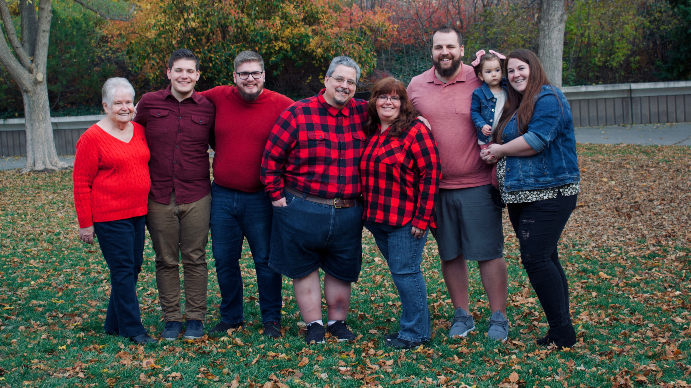
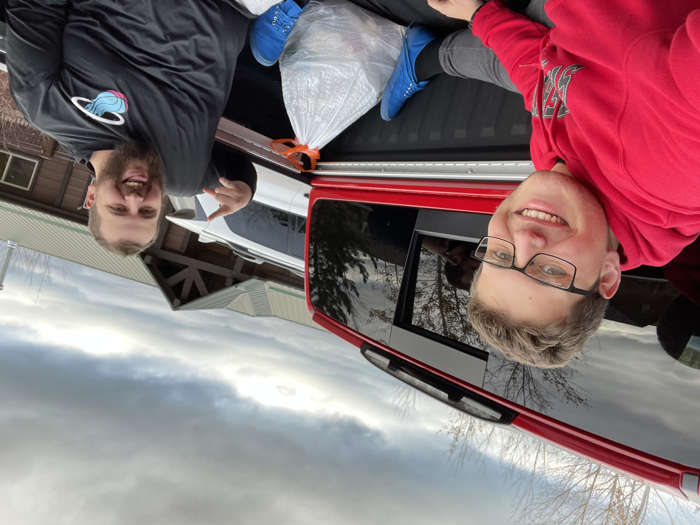
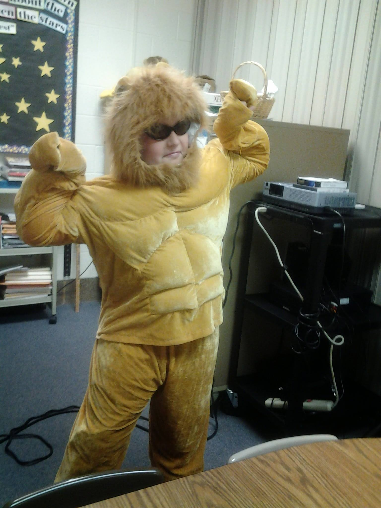
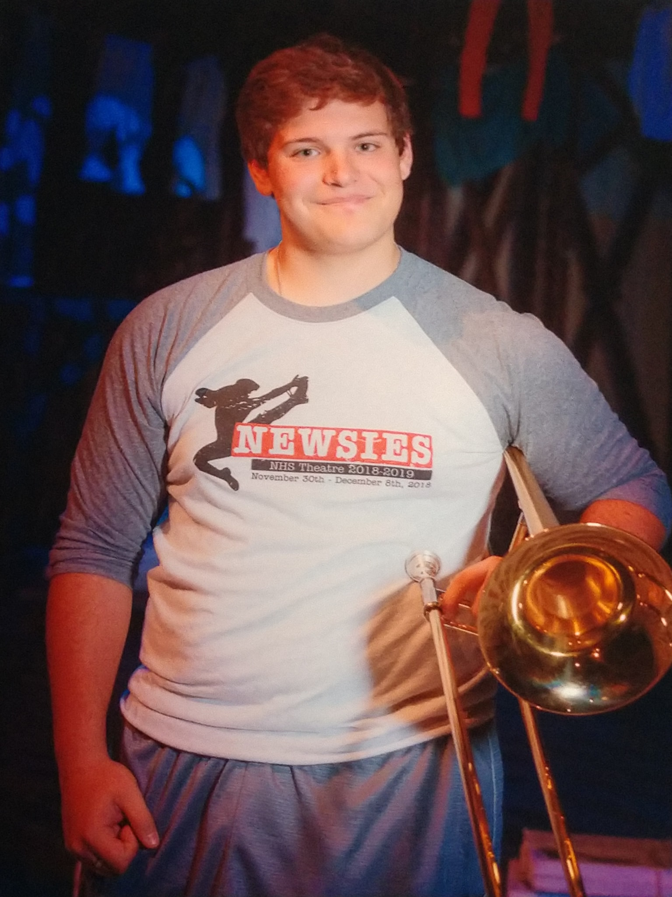
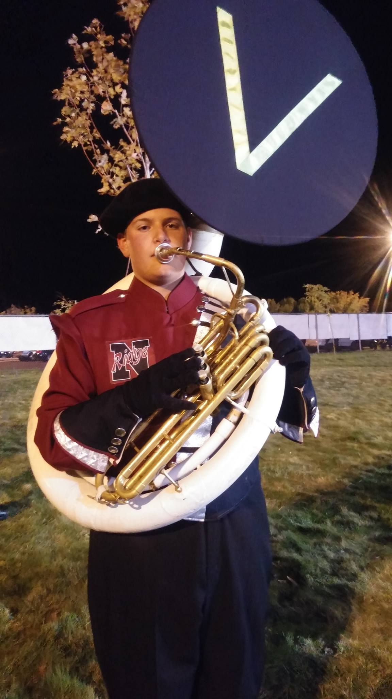
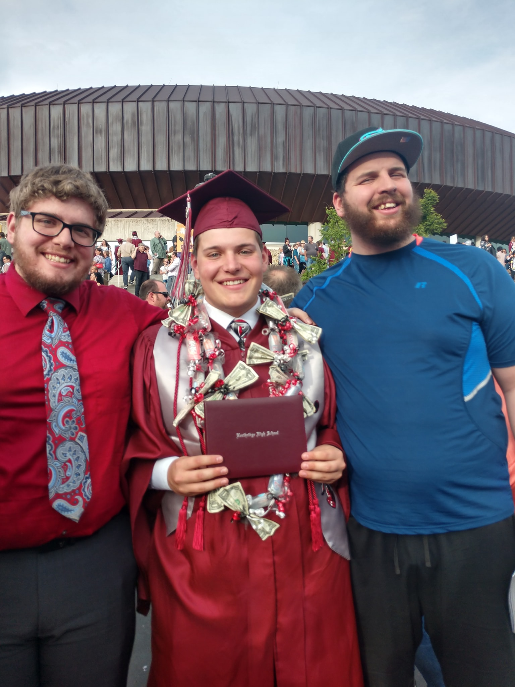
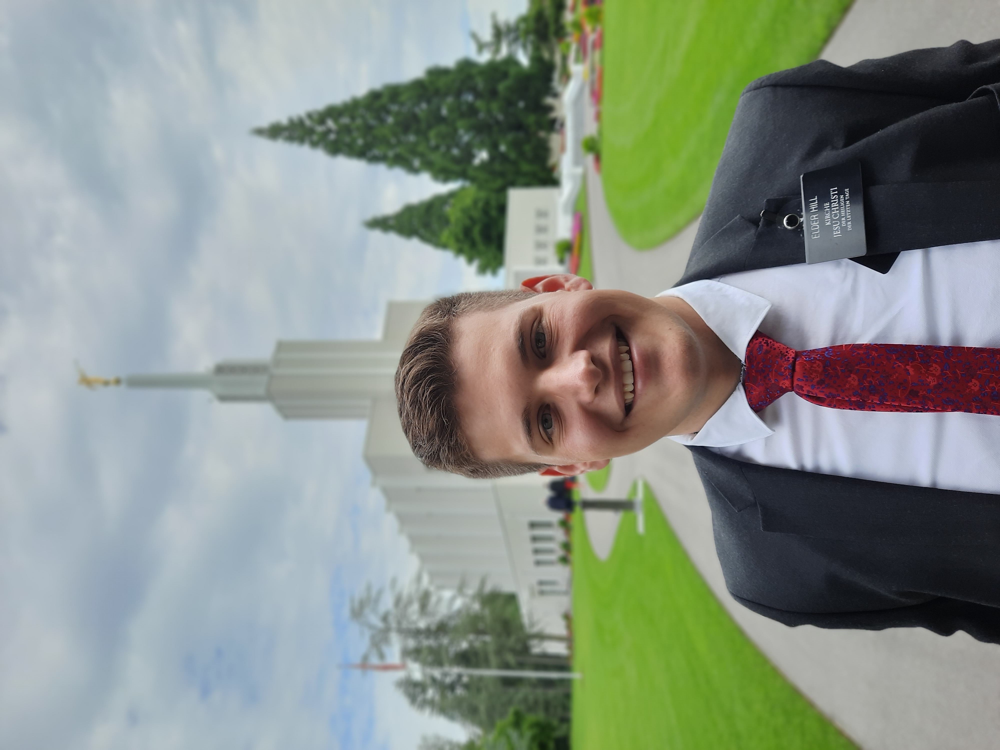

My Family
I am the Youngest of my family of 2 other older brothers and my parents
 People in Picture from left to Right: My Grandma, Me, Older Brother Chris, My Dad, My Mom, Oldest Brother Alex, My Niece Lily, and Sister-In-Law Emily .I have grown up in a wonderful household where we all would tease and laugh about the funny things in life. dinner conversations would be super enjoyable because my older brothers would get me laughing and thus started a chain reaction of all different kinds of laughter
We would take all kinds of family trips and adventures together. The Places we would always visit is St. George and lately has been Barelake
Public Education
I had a lot of fun and exciting oppertunities throughout my Public education that has inspired me to learn and grow.
Elementary
My Elementary education I went to Mountain View Elementary. I don't have quite as many Fond memories, but I do remember my last year, I had the chance to be my Elementary School Mascot as a Mountain Lion. A real big time for me to learn and grow and get out of my shell. That really was the thing that got me out of my major shyness phase.
Junior High

I don't have too much to talk about Junior High Except it was the beginning part of me Loving music. I took band there my 7th grade and couldn't stop. I met so many good friends there and it was all in all great for me.
High School

High School was by far the most influential part of my life. I participated in a couple of school activities, mostly participated in band activities in my school.
- I participated in my High School Musical Pit. that is when we had live music playing for the Musical happening on stage. I had the chance to perform in 2 Musicals through the Pit. We Performed Tarzan and Newsies.
 - Marching Band:
I spent 5 years of my Life participating in marching band granted 2 of those 5 were in parades which were ok. but the best was hands down something called Field Show.
I played the Sousaphone for Marching band, it was a wearable Tuba for your information and it was so much fun to particpate in.

After that time playing the sousaphone my last year of marching, i acutally didn't march on the field persay. I was someone called the Drum Major of the Band. I was glorified conductor to put it plainly. I was on a stand placed at the edge of a football field and I conducted the band in playing music.
I was the leader of the Band and this was super beneficial to me in my life to teach me valuable skills I would endlessly apply in my life
Graduation
With all of my High School done and behind me, I finally graduated in May of 2019. With it being 3 1/2 years since my graduation, I have still been busy with life.
My Mission
the Alpine German-Speaking Mission
I had the Chance to serve in the Alpine German-Speaking Mission, which covered Austria, Germany, and Switzerland. I officially flew out of the country on September 10th, 2019. arriving at the Preston england MTC on the 11th of September. I didn't offically get to Germany until late October of that same year.
during my time there I got to learn a brand new language and meet some amazing people who have changed my life. I spent a majority of my time in Germany, having that be about 13 months in toal. but occassionally veering away and living in Austria for about 7 months and then Switzerland for 3 months. I could probably upload a lot of pictures of my mission here but for your sake, and mine, here is one that I enjoy.
I arrived back home from my mission the 26th of August, 2021. and from there got even more busy with being back home.
What Now?
Work
after getting home from my Mission, I found work relatively quick. A leader I had growing up reached out to me shortly after coming home and offered me a job at a ware house he managed at. The Company's name is Container and Packaging. I worked on the inventory specialist team. This entailed unloading, receiving, and counting the product in the warehouse, where the rest of the warehouse worried about getting orders out of the warehouse.

College
I am currently Studying at BYU, going through my Generals but plan on applying for the Accounting Program here in the near future.
I actually was not a BYU Football fan at all growing up. My Father, has a shrine dedicated to his love for the rival School of Brigham Young University, The University of Utah. I grew up being a fan of the Utes for the longest time, but yet here I am
Although stressful, my time here has been super beneficial for me after being here for a year. I look forward to what more fun adventures happen to me the further along my education I go.
looking forward to the future!
that has been my life until this moment with of course more to add, adventures to be had, and life to live.